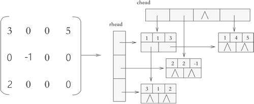
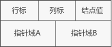
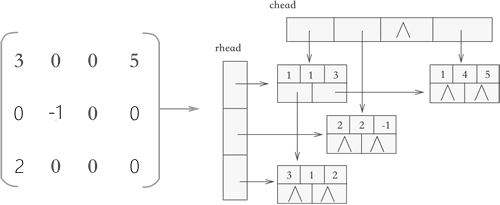
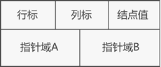

十字链表法，十字链表压缩存储稀疏矩阵详解
对于压缩存储稀疏矩阵，无论是使用三元组顺序表，还是使用行逻辑链接的顺序表，归根结底是使用数组存储稀疏矩阵。介于数组 "不利于插入和删除数据" 的特点，以上两种压缩存储方式都不适合解决类似 "向矩阵中添加或删除非 0 元素" 的问题。
例如，A 和 B 分别为两个矩阵，在实现 "将矩阵 B 加到矩阵 A 上" 的操作时，矩阵 A 中的元素会发生很大的变化，之前的非 0 元素可能变为 0，而 0 元素也可能变为非 0 元素。对于此操作的实现，之前所学的压缩存储方法就显得力不从心。
本节将学习用十字链表存储稀疏矩阵，该存储方式采用的是 "链表+数组" 结构，如图 1 所示。

图 1 十字链表示意图
可以看到，使用十字链表压缩存储稀疏矩阵时，矩阵中的各行各列都各用一各链表存储，与此同时，所有行链表的表头存储到一个数组（rhead），所有列链表的表头存储到另一个数组（chead）中。
因此，各个链表中节点的结构应如图 2 所示:

图 2 十字链表的节点结构
两个指针域分别用于链接所在行的下一个元素以及所在列的下一个元素。
链表中节点的 C 语言代码表示应为：
例如，A 和 B 分别为两个矩阵，在实现 "将矩阵 B 加到矩阵 A 上" 的操作时，矩阵 A 中的元素会发生很大的变化，之前的非 0 元素可能变为 0，而 0 元素也可能变为非 0 元素。对于此操作的实现，之前所学的压缩存储方法就显得力不从心。
本节将学习用十字链表存储稀疏矩阵，该存储方式采用的是 "链表+数组" 结构，如图 1 所示。

图 1 十字链表示意图
可以看到，使用十字链表压缩存储稀疏矩阵时，矩阵中的各行各列都各用一各链表存储，与此同时，所有行链表的表头存储到一个数组（rhead），所有列链表的表头存储到另一个数组（chead）中。
因此，各个链表中节点的结构应如图 2 所示:

图 2 十字链表的节点结构
两个指针域分别用于链接所在行的下一个元素以及所在列的下一个元素。
链表中节点的 C 语言代码表示应为：
typedef struct OLNode{
int i,j;//元素的行标和列标
int data;//元素的值
struct OLNode * right,*down;//两个指针域
}OLNode;
同时，表示十字链表结构的 C 语言代码应为：
#include<stdio.h>
#include<stdlib.h>
typedef struct OLNode
{
int i, j, e; //矩阵三元组i代表行 j代表列 e代表当前位置的数据
struct OLNode *right, *down; //指针域 右指针 下指针
}OLNode, *OLink;
typedef struct
{
OLink *rhead, *chead; //行和列链表头指针
int mu, nu, tu; //矩阵的行数,列数和非零元的个数
}CrossList;
CrossList CreateMatrix_OL(CrossList M);
void display(CrossList M);
int main()
{
CrossList M;
M.rhead = NULL;
M.chead = NULL;
M = CreateMatrix_OL(M);
printf("输出矩阵M:\n");
display(M);
return 0;
}
CrossList CreateMatrix_OL(CrossList M)
{
int m, n, t;
int i, j, e;
OLNode *p, *q;
printf("输入矩阵的行数、列数和非0元素个数：");
scanf("%d%d%d", &m, &n, &t);
M.mu = m;
M.nu = n;
M.tu = t;
if (!(M.rhead = (OLink*)malloc((m + 1) * sizeof(OLink))) || !(M.chead = (OLink*)malloc((n + 1) * sizeof(OLink))))
{
printf("初始化矩阵失败");
exit(0);
}
for (i = 1; i <= m; i++)
{
M.rhead[i] = NULL;
}
for (j = 1; j <= n; j++)
{
M.chead[j] = NULL;
}
for (scanf("%d%d%d", &i, &j, &e); 0 != i; scanf("%d%d%d", &i, &j, &e)) {
if (!(p = (OLNode*)malloc(sizeof(OLNode))))
{
printf("初始化三元组失败");
exit(0);
}
p->i = i;
p->j = j;
p->e = e;
//链接到行的指定位置
if (NULL == M.rhead[i] || M.rhead[i]->j > j)
{
p->right = M.rhead[i];
M.rhead[i] = p;
}
else
{
for (q = M.rhead[i]; (q->right) && q->right->j < j; q = q->right);
p->right = q->right;
q->right = p;
}
//链接到列的指定位置
if (NULL == M.chead[j] || M.chead[j]->i > i)
{
p->down = M.chead[j];
M.chead[j] = p;
}
else
{
for (q = M.chead[j]; (q->down) && q->down->i < i; q = q->down);
p->down = q->down;
q->down = p;
}
}
return M;
}
void display(CrossList M) {
for (int i = 1; i <= M.nu; i++)
{
if (NULL != M.chead[i])
{
OLink p = M.chead[i];
while (NULL != p)
{
printf("%d\t%d\t%d\n", p->i, p->j, p->e);
p = p->down;
}
}
}
}
运行结果：
输入矩阵的行数、列数和非0元素个数：3 3 3
2 2 3
2 3 4
3 2 5
0 0 0
输出矩阵M:
2 2 3
3 2 5
2 3 4
关注公众号「站长严长生」，在手机上阅读所有教程，随时随地都能学习。内含一款搜索神器，免费下载全网书籍和视频。

微信扫码关注公众号